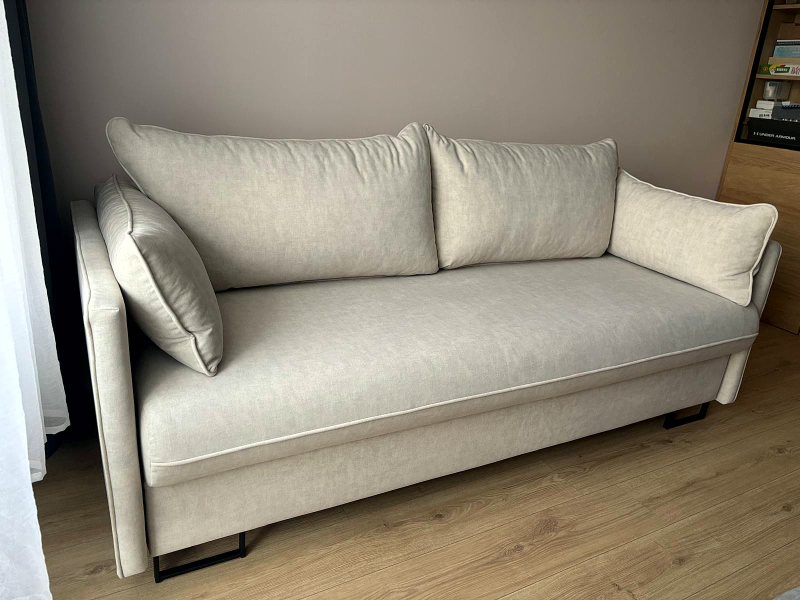
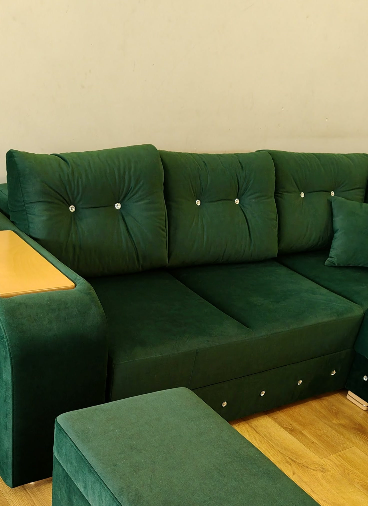
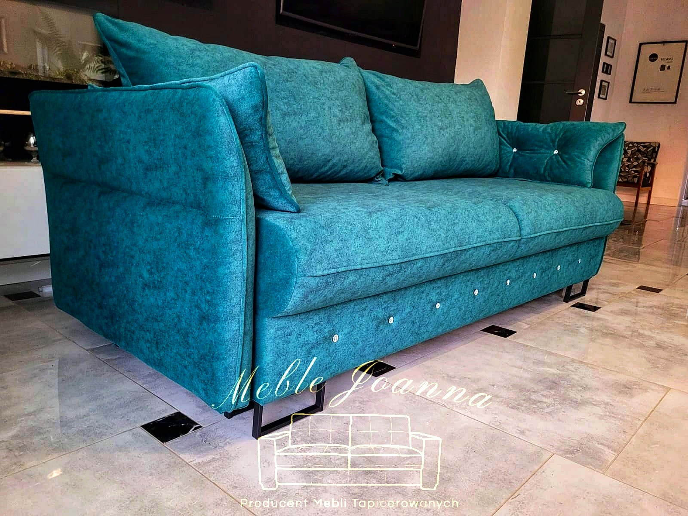
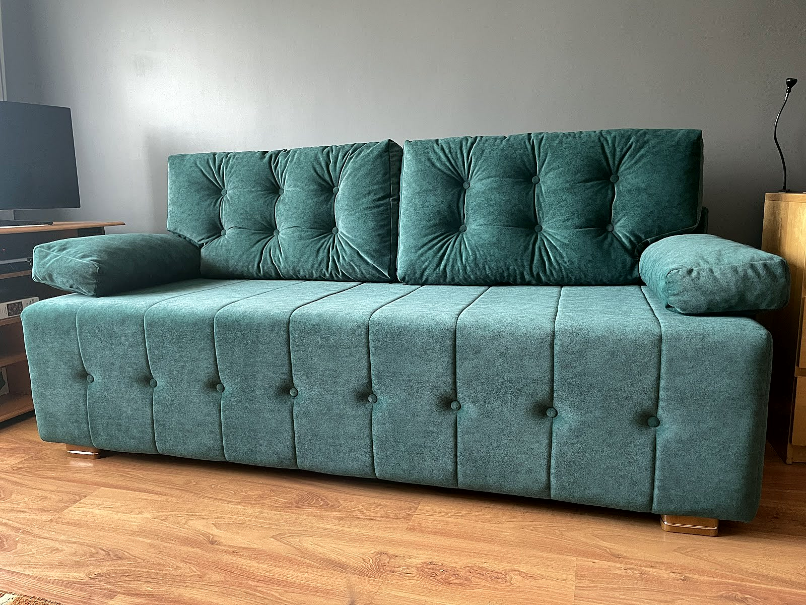
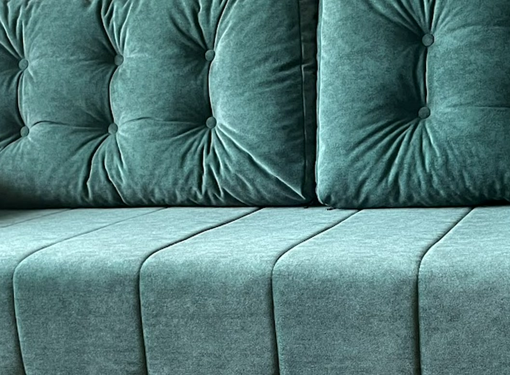
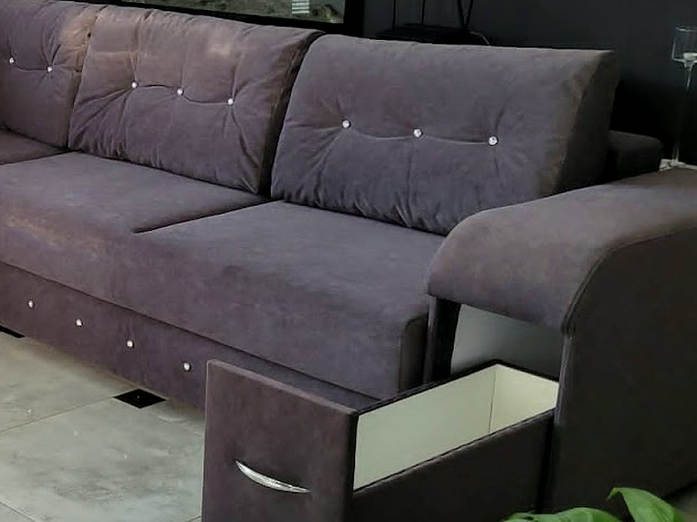
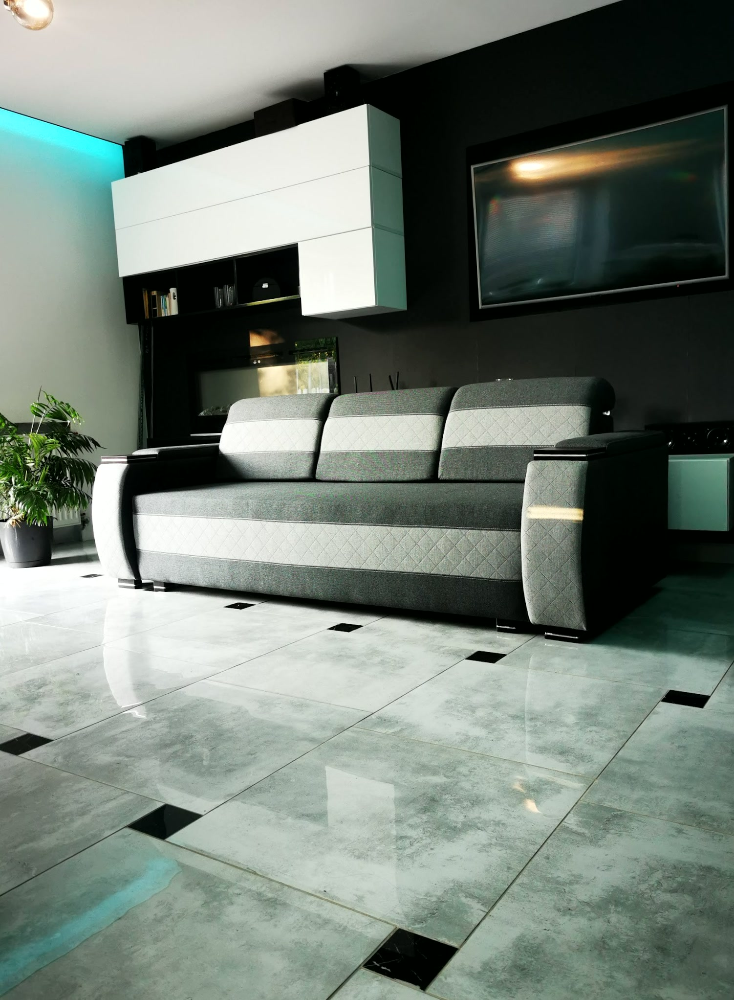

Narożniki, sofy i kanapy na zamówienie
Powiedz, czego szukasz i gdzie mebel ma stanąć. Dobierzemy wymiar, tkaninę i wypełnienie, a potem podamy cenę za całość.

Narożniki na wymiar
Długość boków dopasowujemy do ściany, przy której narożnik ma stanąć. Wybierasz stronę, tkaninę i pikowanie, a na życzenie dokładamy schowek z szufladą w boczku.

Sofy
Sofy na smukłych metalowych nóżkach, z luźnymi poduchami na oparciu. Szerokość dobieramy do pokoju, a wypełnienie siedziska do tego, jak lubisz siedzieć.

Kanapy
Kanapy z pikowanym oparciem i siedziskiem przeszytym w pasy. Szyjemy je w jednym kolorze albo łączymy w jednym meblu dwie tkaniny.

Pikowanie i guziki
Oparcie pikujemy guzikami obszytymi tkaniną albo z kryształkiem. Siedzisko może zostać gładkie albo przeszyte w pasy.

Szuflada w boczku
W boczku narożnika robimy schowek z wysuwaną szufladą. Koc i piloty mają swoje miejsce, a w pokoju nie przybywa mebli.

Dobór tkaniny i koloru
Pomagamy wybrać materiał, kolor, wypełnienie i dodatki. Kolorystykę ustalasz z nami spokojnie, bez pośpiechu.
Od rozmowy do realizacji
Trzy kroki od pierwszego telefonu do mebla w Twoim salonie.
Rozmowa i wymiary
Mówisz, czy szukasz narożnika, sofy czy kanapy i do jakiego pokoju. Podajesz wymiary miejsca, a my podpowiadamy, co się zmieści.
Tkanina i cena
Wybierasz materiał, kolor i wypełnienie. Cenę za całość znasz, zanim zaczniemy szyć.
Szycie i dostawa
Mebel szyjemy u siebie w Michałowie i przywozimy pod wskazany adres, także poza świętokrzyskie.
Narożnik, sofa czy kanapa?
Podaj wymiary miejsca i powiedz, czego szukasz. Dobierzemy tkaninę i podamy cenę.